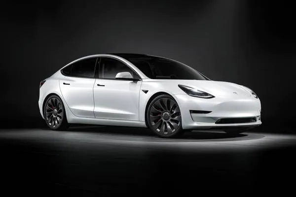

TESLA

Tesla, Inc. ir ASV, Kalifornijā bāzēts uzņēmums, kas projektē, ražo un pārdod elektromobiļus un to piedziņas sastāvdaļas.
Tesla akcijas tiek kotētas NASDAQ fondu biržā ar simbolu TSLA.
Tesla ieguva plašu uzmanību ar tās ražoto elektromobiļa modeli Tesla Roadster, kas bija pirmais pilnībā elektriskais sērijveida sporta auto; tam sekoja Model S, pilnībā elektrisks luksusa sedans, tam sekoja Model X, pilnībā elektrisks luksusa SUV, un tam sekoja Model 3[4].
Tesla pārdod arī elektromobiļu piedziņas komponentes, ieskaitot litija jonu bateriju komplektus citiem autoražotājiem, ieskaitot Daimler un Toyota. Tesla izpilddirektors Īlons Masks ir izteicies, ka saredz Tesla kā neatkarīgu autoražotāju, kura nākotnes mērķis ir masveidā ražot pilnībā ar elektrību darbināmus automobiļus vidējam patērētājam pieejamā cenā.
Pašlaik (2019.gada februārī) Tesla pārdod Model S, Model X, Model 3, atļauj rezervācijas uz Tesla Roadster 2.
Vēsture
Uzņēmumu Tesla (sākotnēji Tesla Motors) reģistrēja 2003. gada 1. jūlijā Martins Eberhards un Marks Tarpenings. 2004. gada februārī trīs dibinātāji piesaistīja investīcijas 7,5 miljonu ASV dolāru apmērā, Īlonam Maskam ieguldot 6,5 miljonus dolāru. Masks kļuva par direktoru padomes priekšsēdētāju un iecēla Eberhardu par ģenerāldirektoru.
Pirmā Tesla automobiļa prototipi tika oficiāli prezentēti 2006. gada 19. jūlijā Santamonikā (Kalifornija).
2006. gadā Maskam izdevās piesaistīt finansējumu 100 miljonu dolāru apmērā. Rezultātā 2008. gadā Tesla sāka ražot savu pirmo modeli Roadster.
2010. gada janvārī Tesla saņēma aizdevumu 465 miljonu dolāru apmērā no ASV Enerģētikas departamenta, ko uzņēmums atmaksāja 2013. gadā.
2010. gada maijā Tesla sāka būvēt rūpnīcu Frīmontā (Kalifornija) Model S ražošanai.
2010. gada 29. jūnijā Tesla īstenoja akciju sākotnējo publisko piedāvājumu (IPO) NASDAQ un piesaistīja 226 miljonus ASV dolāru, kļūstot par pirmo Amerikas auto ražotāju, kas īstenoja IPO, kopš to izdarīja Ford Motor 1956. gadā.
2012. gada jūnijā Tesla sāka ražot savu otro automašīnu Model S. 2017. gada jūlijā Tesla sāka sedana Model 3 tirdzniecību.
Pēc desmit gadu darbības, 2013. gada pirmajā ceturksnī Tesla pirmoreiz uzrādīja peļņu.
2016. gada jūnijā Tesla paziņoja, ka vēlas iegādāties saules enerģijas iekārtu ražotāju SolarCity, kurā Īlons Masks bija padomes priekšsēdētājs un viņam piederēja 22 % SolarCity kapitāldaļu. 1. augustā noslēgta vienošanās par SolarCity iegādi par 2,6 miljardiem USD. Darījums vēl jāapstiprina akcionāriem un valsts institūcijām.
2019. gada 14. martā notika jaunā elektriskā auto Tesla Model Y prezentācija.
2020. gada novembrī Tesla, Uber un vēl 26 Amerikas uzņēmumi dibināja organizāciju Zero Emission Transport Association (ZETA), kas lobēs elektrisko auto skaitu palielināšanu ASV.
2021. gada 25. oktobrī uzņēmuma kapitalizācija pārsniedza 1 triljonu dolāru.
Teslas tirzniecības centrs-
Auto-BMW,AUDI,TESLA-drag race
-ATGRIEZTIES